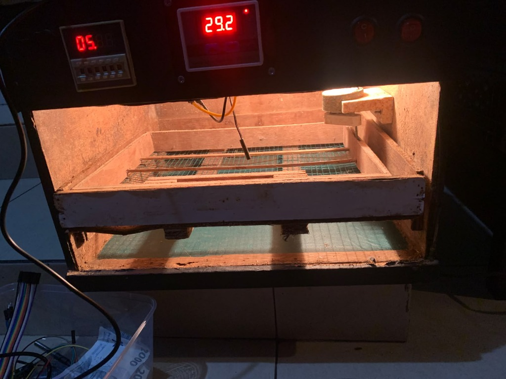

Perbandingan Sensor DS18B20 vs DHT22 terhadap rentang batas
💧 Kurva Kelembapan Relatif (RH)
Fluktuasi kelembapan udara ruang inkubasi dan injeksi humidifier
⚙️ Status Operasional Aktuator Fisik
Kondisi relay pemanas, fan pendingin, pengkabut ultrasonik, dan buzzer
MODE OTOMATIS
🔥 Lampu Pijar (5W x 2)AKTIF
Relay GPIO 26: Pemanas utama inkubator
💨 Fan Sirkulasi DCAKTIF
Driver GPIO 27: Meratakan sebaran panas
☁️ Humidifier UltrasonicMATI
MOSFET GPIO 25: Pengkabutan kelembapan
🔔 Alarm BuzzerNORMAL
GPIO 14: Indikator audio kondisi abnormal
🔄 Pembalik Telur (SG90)
GPIO 18: Mekanisme 1 poros miring 45°
+45° Kanan
Putar berikutnya:01:45:12
📋 Ringkasan Siklus Batch Inkubasi Entok
Parameter biologis dan jadwal penetasan telur entok (Muscovy duck)
Kode & Ras Telur
Inkubasi Telur Entok Manila Super
Entok Manila (Cairina moschata) - 30 Butir
Perjalanan Siklus Biologis
Hari ke-8Total: 35 Hari
Estimasi Menetas & Catatan Fase
12 Desember 2026
Fase Awal: Jaga kestabilan suhu 37.8°C dan pembalikan 4 jam sekali.
⚡ Capaian Mata Kuliah: Internet of Things (IoT)
Implementasi perangkat keras berbasis mikrokontroler ESP32 DevKit V1 dengan sensor suhu presisi ganda
(DS18B20 waterproof & DHT22), aktuator relay pemanas, fan DC 6010, servo SG90 tilting grid, modul ultrasonik kabut 5V,
dan display OLED 0.96" I2C. Komunikasi data real-time dua arah menggunakan protokol HTTP REST API dan WebSocket.
🎛️ Pusat Kendali Aktuator & Saklar Override
Kendalikan aktuator fisik langsung dari browser ke ESP32
Lampu Pijar Pemanas (GPIO 26)
Relay 2x Lampu Pijar 5 Watt
Kipas Sirkulasi Fan DC 6010 (GPIO 27)
Sirkulasi udara pemerata suhu
Modul Humidifier Ultrasonic 5V (GPIO 25)
Pengaturan kabut kelembapan nisbi
Motor Servo SG90 Pembalik Telur (GPIO 18)
Poros mekanis tilting grid sudut miring
Buzzer Audio Alarm (GPIO 14)
Uji suara frekuensi piezo buzzer
📦 Prototipe Fisik & Digital Twin Inkubator
Sinkronisasi visual antara perangkat miniatur nyata dengan sistem pemantauan digital
Sesuai Prototipe Nyata
📷 Prototipe Miniatur Fisik Anda

Panel 7-Segment: 29.2°C
🔥 Pemanas Lampu Kanan
🥚 Rak Kayu Kawat Ram Hijau
Komponen teridentifikasi: Display suhu digital 7-segment, timer controller, probe gantung DS18B20 tengah, lampu pijar kanan, dan tuas rak pembalik.
🔄 Digital Twin Real-Time
Visualizer Digital Twin bereaksi secara langsung terhadap sudut putaran servo dan perubahan suhu real-time.
Komponen
Pin ESP32
Sinyal / Peran
DS18B20 Waterproof
GPIO 4
Input Digital OneWire (Suhu Inti)
DHT22 / AM2302
GPIO 5
Input Digital (Suhu & Kelembapan)
Servo SG90 1 Poros
GPIO 18
Output PWM (Pembalik Telur)
Relay Lampu Pijar (2x5W)
GPIO 26
Output Digital (Kontrol Pemanas)
Fan DC 6010 (12V)
GPIO 27
Output Driver (Sirkulasi Udara)
Humidifier Ultrasonic 5V
GPIO 25
Output MOSFET (Pengkabutan)
Buzzer Alarm
GPIO 14
Output Sinyal Audio Alarm
OLED 0.96" I2C
GPIO 21 / 22
SDA / SCL Display Lokal
🧪 Laboratorium Uji Anomali & Simulasi Skenario
Uji respons sistem dan algoritma AI saat terjadi kegagalan fisik (Live Demo Sidang)
💻 Kode Sumber Firmware ESP32 DevKit V1 (InkubatorEntok_ESP32.ino)
Kode siap flash melalui Arduino IDE / VS Code PlatformIO yang terhubung ke server ini
Penyesuaian target otomatis sesuai tahapan embriogenesis
Fase Biologis
Hari
Target Suhu
Target RH
Pembalikan
Fase Awal (Vaskular)
1 - 14
37.8°C
58 - 62%
Aktif (4 Jam)
Fase Pertumbuhan & Cooling
15 - 29
37.5°C
62 - 68%
Aktif + Cooling
Fase Kritis (Lockdown)
30 - 35
37.2°C
75 - 80%
MATI (0°)
💡 Penjelasan Biologis: Telur entok memiliki membran tebal. Pada hari 30-35 pemutaran dimatikan dan kelembapan ditingkatkan ke 75-80% agar selaput lunak sehingga paruh anak entok dapat memecah kerabang tanpa kelelahan.
Deteksi fertilitas, percabangan vaskular, dan embrio mati
Embrio Fertil & Berkembang Normal (Hari ke-7)
Keyakinan Model AI: 96.4%
Ciri Vaskular Terdeteksi:
Jaringan pembuluh darah laba-laba (spiderweb capillary pattern)
Bintik gelap mata embrio aktif di pusat vaskularisasi
Kantung udara (air cell) mulai terbentuk di ujung tumpul
Tindakan Dianjurkan: Lanjutkan inkubasi dan pembalikan telur teratur.
💬 Asisten Cerdas Konsultasi & Diagnosis Inkubasi
Konsultasi biologis telur entok dan penanganan kendala IoT
AI Consultant
Halo peternak! 👋
Saya asisten cerdas sistem inkubator NETESIN. Tanyakan apa pun seputar parameter suhu, kelembapan, siklus biologis telur entok 35 hari, atau penanganan anomali perangkat keras.
🌐 Capaian Mata Kuliah: Teknologi Sistem Terintegrasi
Mengintegrasikan seluruh subsistem ke dalam arsitektur berlapis yang kohesif:
Physical Edge IoT (ESP32) terhubung melalui Jaringan Protokol Nirkabel (HTTP/REST & WebSocket)
ke Server Gateway Terpusat (Node.js & Express), berinteraksi dengan AI Intelligence Layer,
Database Persistence, antarmuka Web Presentation interaktif, dan
Layanan Notifikasi Eksternal (Webhook Bot Telegram).
🗺️ Diagram Topologi Arsitektur Sistem Terintegrasi
Aliran data end-to-end dari probe fisik hingga platform cloud dan notifikasi